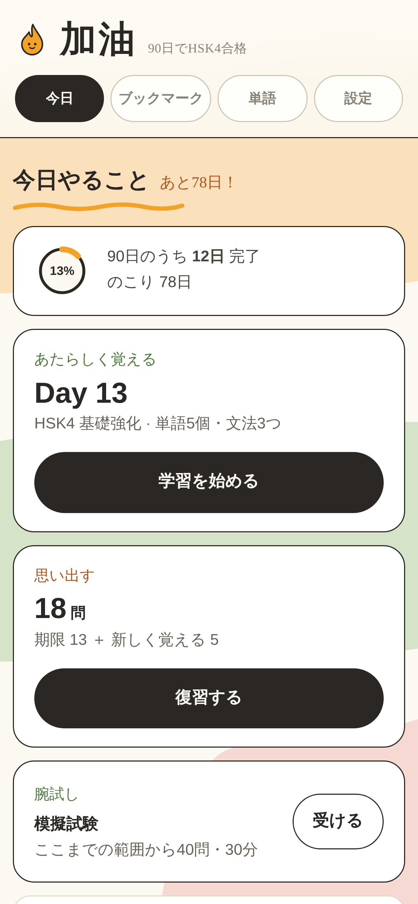
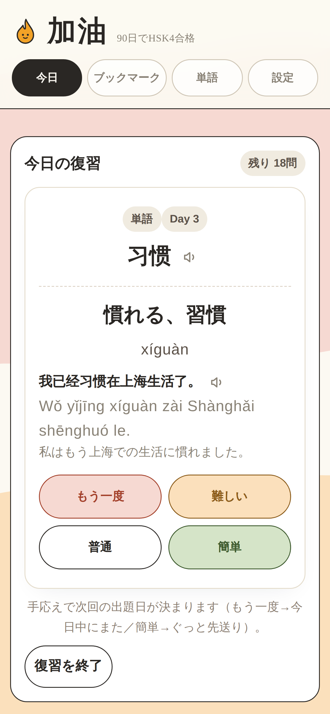
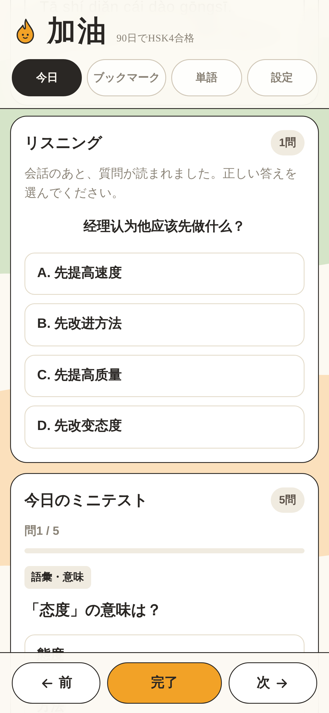
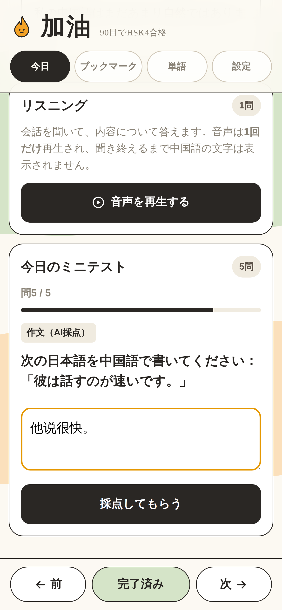
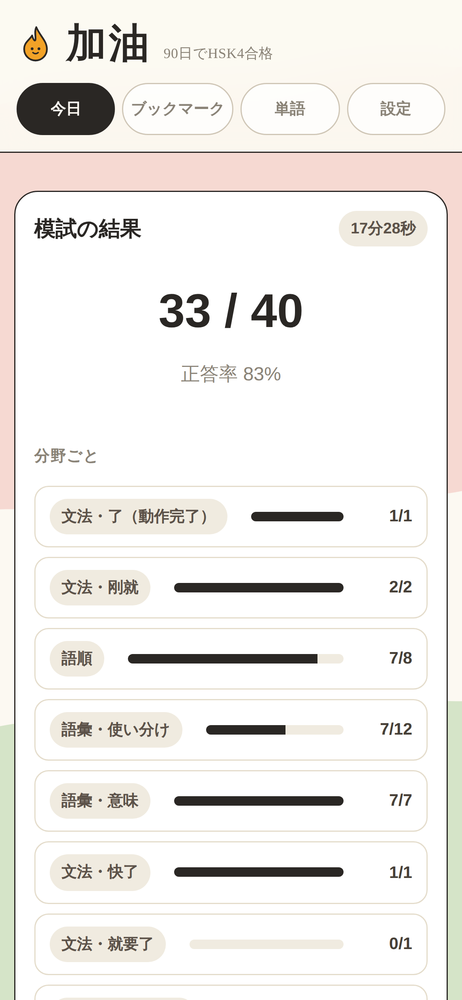

頻出498語と文法222項目を、1日15分・単語5個ずつ。忘れる頃にもう一度出るので、覚えたことが抜けていきません。
例文は、上海の会議室でも街角の食堂でも実際に口に出す場面から選んでいます。

こういう人のために作りました
逆に、今週末の試験に間に合わせたい人には向きません。積み上がるまでに時間がかかる作りです。
会議と生活の両方の語彙が要る。例文を仕事の場面から選んでいるので、覚えたその日に使えます。
HSK4は累計1200語。3から600語増えるところを、90日に割ってあります。
単語帳のどこまでやったかを覚えておく必要がありません。開けば今日ぶんだけが出ています。
最初の級診断（20問・約7分）で、いまの位置から始められます。スキップもできます。
毎日の15分
「今日は何をやるんだっけ」で止まらないように作りました。
新しく覚える5語と、思い出す番が来た語。この2つが1画面に並びます。探す手間がありません。
ネイティブ音声のリスニング1問と、ミニテスト5問。選択・並べ替え・作文で、その日の語をすぐ使わせます。
手応えを4段階で答えるだけ。間隔反復が次に出す日を決めるので、覚えた語が静かに抜けていくのを防ぎます。
中身
どれも実際の画面です。

1回目に正解すると翌日、2回目で6日後、3回目で15日後——正解のたびに出題の間隔が開いていきます。「もう一度」を押した語だけが近い間隔で出続けます。
どの語をいつ出すかはアプリが持つので、覚える対象を自分で管理する必要がありません。

HSK4は听力45問・阅读40問・书写15問。听力が約3分の1を占めます。全90日ぶんにネイティブ音声の会話を用意しました。
音声が流れるのは1回だけで、聞き終えるまで中国語の文字は出ません。答え合わせのあとに台本・拼音・和訳が出るので、聞き取れなかった場所がその場で分かります。

1日の終わりに5問。選択が4問と、並べ替えか作文が1問です。並べ替えは、語の意味を覚えていても語順が身についていないと通りません。
作文はAIが採点します。書いた中文に点数と「自然な言い方」が返るので、通じるけれど不自然な言い回しがそのまま固まりません。

10日ぶん終えると、そこまでの範囲から40問・30分の模試を受けられます。分野ごとの正答率が出て、間違えた範囲の語はそのまま復習へ送れます。
※ 模試に听力は含みません。本番の点数の目安にはならない旨を、アプリ内にも明記しています。
例文の選び方
例文は、実際に口に出す場面から選んでいます。
先に、正直なところを
価格
90日で終わる教材に、毎月の課金は合わないと考えました。
決済はStripe。カード情報はこのサイトを通りません。特定商取引法に基づく表記はこちら。
よくある質問
保証はできません。用意しているのは、90日ぶんに割った頻出498語・文法222項目・全90日のリスニング音声と、その定着のための間隔反復です。听力の設問形式は本番と完全に同じではないので、直前期は公式の過去問との併用をおすすめします。
新しく覚えるぶんが単語5個・文法3つ・リスニング1問・ミニテスト5問で、10〜15分ほど。これに復習が加わりますが、枚数は日によって変わります。多すぎると感じたら、1日の新規問数を減らすか「なし」にして復習だけに絞れます。
復習の期限が来た語がたまりますが、1日の新規問数を「なし」にすれば、新しい語を増やさず復習だけを消化できます。まず溜まったぶんを片付けてから再開するのが楽です。
最初に級診断（20問・約7分）が出ます。HSK3相当と出た場合も、HSK4の1200語にはHSK1〜3の語彙が含まれるので、少し背伸びですが同じ教材で進められます。HSK5以上と出た場合はこの教材では易しすぎると正直にお伝えします。診断はスキップもできます。
Day 1-7 が無料です。単語・文法・リスニング・ミニテスト・間隔反復まで、有料部分と同じ作りのものを1週間ぶん使えます。合うかどうかはそこで判断できます。
不要です。ブラウザで開くだけで使えます。ホーム画面に追加すると、アプリのように起動でき、オフラインでも学習できます。iPhoneなら共有ボタンから「ホーム画面に追加」です。
既定では使っている端末の中だけです。Googleアカウントでログインすると、進捗・ブックマーク・復習スケジュールを端末間で同期できます。